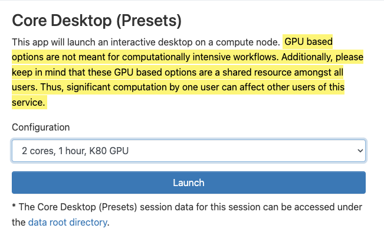
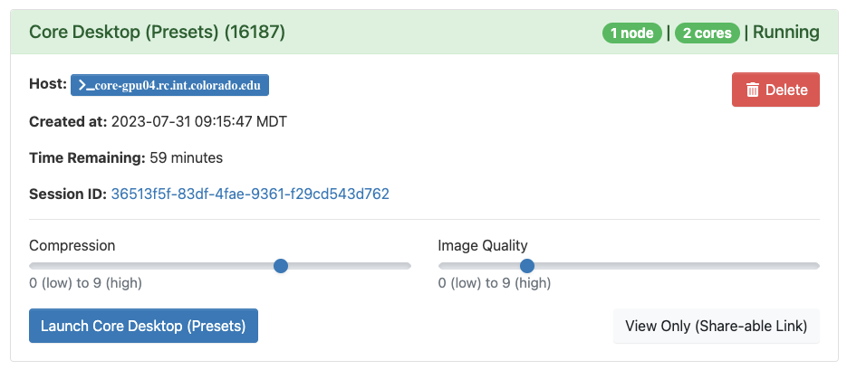
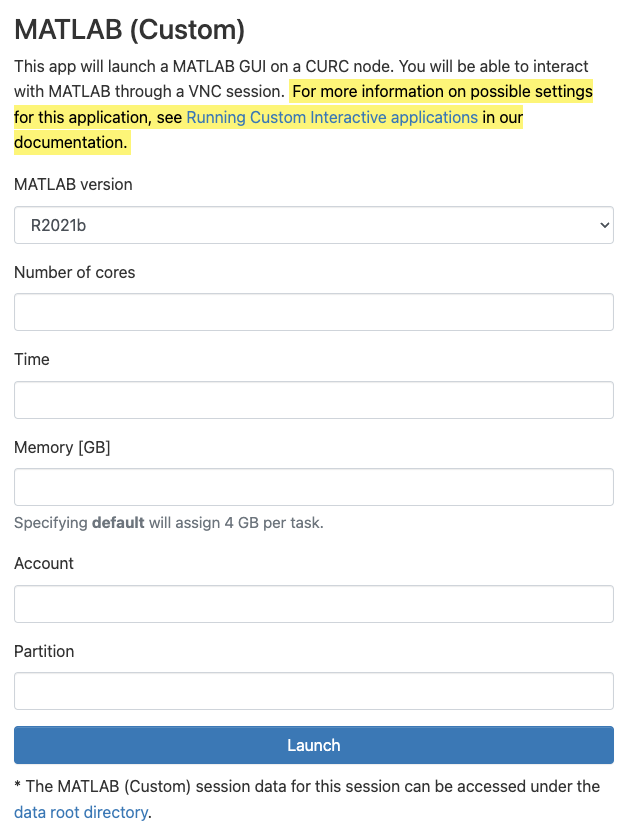
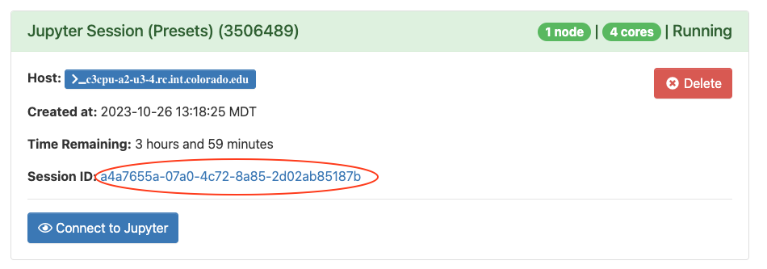
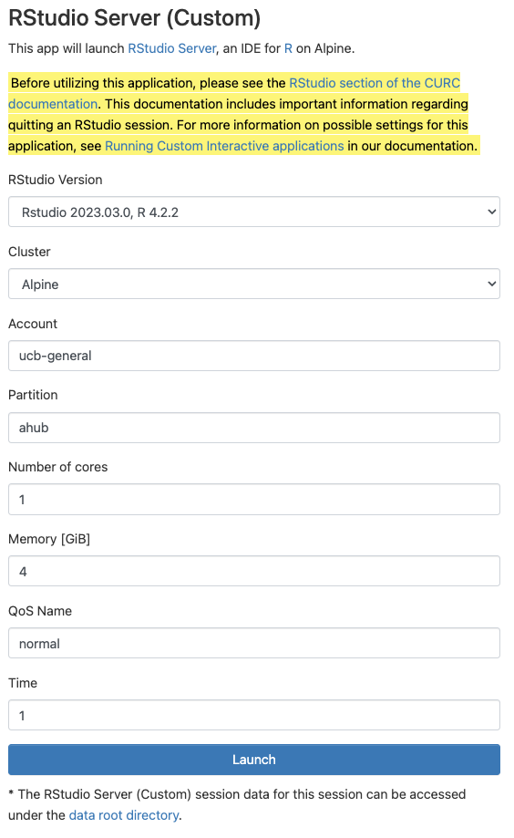
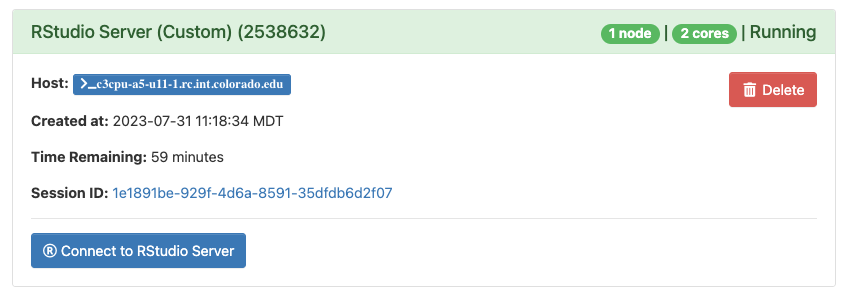

Open OnDemand (Browser Based HPC Portal)#
CURC Open OnDemand is a browser based, integrated, single access point for all of your high performance computing (HPC) resources at CU Research Computing. CURC Open OnDemand provides a graphical interface to view, edit, download, and upload files; manage and create job templates for CURC’s clusters; and access CURC interactive applications (Virtual Desktops, Matlab, Jupyter Notebooks, and RStudio). All of these actions are completed via a web browser and require only minimal knowledge of Linux and scheduler commands.
Getting started with CURC Open OnDemand#
To connect to CURC Open OnDemand, visit https://ondemand.rc.colorado.edu. The first page of CURC Open OnDemand will bring you to a login prompt. Use your CU Research Computing credentials and Duo 2-factor authentication to login. If you need a CU Research Computing account please visit our account request page to get started. If you are an RMACC member, please follow our provided instructions on accessing Alpine resources for RMACC members.

Notes on logging out:
You must completely quit your browser in order for “logout” to occur. If after reopening your browser you are still logged in, please clear your cookies. If you are on a Chromebook or Chromebox, you will need to reboot your device in order to “quit the browser” and thus “logout”.
Tip: Using a “private browsing mode” window while using OnDemand is a great way to handle “auto-logout”, as closing your browser window will remove all associated cookies and session information.
Features#
When you have successfully logged into CU Open OnDemand, you will see the landing page with the following features broken into tabs along the top of the page: Files, Jobs, Clusters (shell access), Interactive Apps, and My Interactive Sessions.

We’ll step through these features one at a time.
Files#
The File menu allows you to view and operate on files in different file spaces: your home directory, projects directory, scratch spaces, and (if you own one or are part of a group with one) access to PetaLibary allocations.
Selecting one of the file spaces will open a separate browser window which will allow you to navigate the space in a graphical setting similar to a file browser on a personal computer. From here you can download, upload, create, delete, and open files.
NOTE: Please use Globus to transfer files to and from
/scratch/alpineor/rc_scratch. Additionally, Globus should be used if you have more than 1 GB of data to transfer. Open OnDemand is not designed to handle large file transfers.
For additional documentation visit OSC’s File Transfer and Management help page.
Jobs#
Jobs can be monitored, created, edited and scheduled with the job management tools under the Jobs menu.
Active Jobs: Under the “Active Jobs” tab you can view active jobs. You can choose to view your jobs (or all jobs) as well as choose from specific clusters (Alpine, Core, or All Clusters). From this menu you can also cancel your own jobs.
Job Composer: Create and edit job scripts and schedule jobs under this menu.
See OSC’s Job Management help page for detailed use of the job composer feature.

Clusters (Shell Access)#
The Clusters menu provides shell access to login nodes on CURC clusters. The shell terminal is similar to many other tools that provide terminal access.
Currently, Alpine shells log you into a basic login node. You can load in either Alpine or Blanca slurm instances from here:
module load slurm/<cluster>with either Alpine or Blanca.
Alpine: The Alpine tab will launch a terminal that RC users can use to manually access an RC Login node. After the tab opens, type your CURC password and accept the Duo push to your phone, which will complete the login to the terminal.
Interactive Applications Menu#
The Interactive Applications menu contains options to launch certain applications that have graphical user interfaces (GUIs) for interactive use on CURC clusters. Currently supported applications include a remote desktop, MATLAB, Jupyter session, RStudio session, and VS Code-Server.
Core Desktop (remote desktop)#
To start a remote desktop session, you can select either
Core DesktoporCore Desktop (Presets)from the interactive applications menu. When starting aCore Desktopsession, you may customize the runtime and number of cores for the session. If you selectCore Desktop (Presets), you may select from standard configurations we provide. Once either option is selected, click “Launch” to submit the remote desktop job to the queue. The wait time depends on the number of other users presently on the resource. Requesting smaller and shorter jobs may facilitate shorter wait times.
When your remote desktop is ready, you can click the “Launch Core Desktop” or “Launch Core Desktop (Presets)” button to bring up a web page with the remote desktop. In most cases, the default compression and image quality will suffice. If you do have problems with image quality you can adjust these settings as necessary. 
With the remote desktop session running and open, you should be able to run standard Linux desktop applications that have a graphical user interface (GUI).
Notes:
- GPU based options are not meant for computationally intensive workflows. Additionally, please keep in mind that these GPU based options are a shared resource amongst all users. Thus, significant computation by one user can affect other users of this service.
You can copy/paste into/out of the VNC desktop using the clipboard in the “hidden” tab on the left-hand-side of the virtual desktop.
Closing the window will not terminate the job. You can use the “My Interactive Sessions” tab to view all open interactive sessions and terminate them.
MATLAB#
To start an interactive MATLAB session, select either
MATLAB (Custom)orMATLAB (Presets)from the interactive applications menu. When starting aMATLAB (Custom)session, you may customize resources allocated to the session and other characteristics of the dispatched Slurm job. For more information on these options, please see the Running Custom Interactive applications section below. If you selectMATLAB (Presets), you may select from standard configurations we provide. Once either option is selected, click “Launch” to submit the MATLAB job to the queue. The wait time depends on user provided options, such as the number of cores and time requested.
When your Matlab session is ready, you can click the “Launch MATLAB (Custom)” or “Launch MATLAB (Presets)” button to bring up a web page with the MATLAB session. In most cases, the default compression and image quality will suffice. If you do have problems with image quality of the MATLAB session, you can adjust as necessary.
Once launched, it may take a few minutes for MATLAB to begin. However, once started, you should be able to interact with MATLAB as you would on your own computer.
Notes:
- GPU based options are not meant for computationally intensive workflows. Additionally, please keep in mind that these GPU based options are a shared resource amongst all users. Thus, significant computation by one user can affect other users of this service.
Closing the window will not terminate the job, you can use the “My Interactive Sessions” tab to view all open interactive sessions and terminate them.
Jupyter Session#
When starting an interactive Jupyter session job, you may select
Jupyter Session (Custom)orJupyter Session (Presets)from the menu. TheJupyter Session (Custom)option allows you to modify the resources and Slurm configurations for the job. For more information on these options, please see the Running Custom Interactive applications section below. If you selectJupyter Session (Presets), you may select from standard configurations we provide. Most use cases can be accommodated by one of the presets. TheJupyter Session (Presets)option submits jobs to Alpine’sahubpartition. This partition provides users with rapid start times, but limits users to one Jupyter session (or any one job using the partition).
Click “Launch” to submit the Jupyter session job to the queue. The wait time depends on the number of cores and time requested. The preset options generally start within a few moments.
Once your Jupyter Notebook session is ready, you can click “Connect to Jupyter”. An interactive Jupyter session will be started in a new window.
Notes:
When the session starts, the file navigator panel displays CURC root. You can navigate to one of your CURC spaces by selecting
homeorprojectsfrom the file panel on the left. Alternatively, you can go to “File” then “Open Path” and enter your path in the field (e.g./projects/<your username>).For more information on running Jupyter sessions, check out RC’s page on Jupyter.
Closing the window will not terminate the job, you can use the “My Interactive Sessions” tab to view all open interactive sessions and terminate them.
One can access a single GPU via the
Jupyter Session (Custom)application by following the instructions provided in the GPU access for Jupyter Sessions section below.
Creating a Jupyter Session Conda Environment#
In Jupyter Session applications you have the option to launch a Jupyter session using a Conda environment that you have created. This becomes extremely useful if you are using a package that requires extensions be installed in the environment that is launching the Jupyter session. In order to configure your environment so that it launches correctly, you need to ensure that the appropriate packages are installed in it. Below we provide the process needed to correctly create your environment using a Jupyter Session terminal.
Obtain a compute node by launching a Jupyter session using the Anaconda version of your choice and using the
baseenvironmentOnce the Jupyter session has been launched, open up a terminal in Jupyter

In your terminal, load the Anaconda version you wish to use e.g.
[user@c3cpu-a2-u3-4 ~]$ module load anaconda/2020.11
Create a Conda environment with the name and Python version of your choice (here we use
my-conda-envand Python version 3.10)[user@c3cpu-a2-u3-4 ~]$ conda create -n my-conda-env python=3.10
Activate your conda environment
[user@c3cpu-a2-u3-4 ~]$ conda activate my-conda-env
Install either JupyterLab or Jupyter Notebook (it is preferred that users install JupyterLab)
If you would like to install JupyterLab:
(my-conda-env) [user@c3cpu-a2-u3-4 ~]$ conda install -c conda-forge jupyterlab
If you would like to install Jupyter Notebook (the classic version of Jupyter)
(my-conda-env) [user@c3cpu-a2-u3-4 ~]$ conda install -c conda-forge notebook
You can now install the rest of the packages you require in this environment.
Now that we have our environment correctly created, we can launch a Jupyter session utilizing this environment. This can be done as follows:
Launch the Jupyter session using the environment you created:
Once the session is launched, it is also important to ensure that your environment is being correctly utilized. To do this, open up a terminal application and determine what Python and Jupyter are being used:
[user@c3cpu-a2-u3-4 ~]$ which python /projects/user/software/anaconda/envs/my-conda-env/bin/python [user@c3cpu-a2-u3-4 ~]$ which jupyter /projects/user/software/anaconda/envs/my-conda-env/bin/jupyter
The provided output should be utilizing the environment you created, as seen by the output
anaconda/envs/my-conda-env.If your environment is not being used, this is usually due to one of two reasons:
You have incorrectly provided the name of your Conda environment
You have chosen an Anaconda version that is not the same as the one you used to install your Conda environment
In both of these scenarios, you can confirm that your environment is not being used by looking at the output.log for your job:
Select “My Interactive Sessions”
Click the link next to the “Session ID” for your running job 
Open the file
output.logby clicking itIf you see an
EnvironmentNameNotFoundthis means that your environment is NOT being used
RStudio#
To start an interactive RStudio job, select
RStudio Server (Custom)orRStudio Server (Presets)from the menu. TheRStudio Server (Custom)option allows you to modify the resources and Slurm configurations for the job. For more information on these options, please see the Running Custom Interactive applications section below. TheRStudio Server (Presets)application provides configurations for your convenience. Most use cases can be accommodated by one of the presets. TheRStudio Server (Presets)option submits jobs to Alpine’sahubpartition. This partition provides users with rapid start times, but limits users to one RStudio Server session (or any one job using the partition; for example if you have a Jupyter session that is also using theahubpartition, you will not be able to start an RStudio Server session using the preset options). Click “Launch” to submit the RStudio job to the queue. The wait time depends on the number of cores and time requested. The preset options provided generally start within a few moments.
Once your RStudio session is ready, you can click “Connect to RStudio Server”. An interactive RStudio session will be started in a new window. 
Please note that the first time you launch the session it may take awhile before you can connect to the session. This is because we are creating a unique persistent overlay for you that can give you the ability to install dependencies. Subsequent launches will not take as long.
To shut down an RStudio server, go to the “File” menu at the top and choose “Quit session…”. If you have made changes to the workspace, then you will be asked if you would like to save them to
~/.RData, this is not necessary, but can be helpful. Once completed, a prompt will notify you that your R session has ended and will give you the option to restart a server, if desired. However, it is important to note that quitting the session will not cancel the job you are running. Additionally, closing the window will not terminate the job. To terminate the job, you can use the “My Interactive Sessions” tab in Open OnDemand to terminate running sessions.
Important Notes:
We have designed the RStudio app in Open OnDemand such that it employs versions of R that match the versions of R that are also available in the CURC module stack. This is done to facilitate moving between using RStudio for interactive work, and running larger R workflows as batch jobs on Alpine or Blanca. Due to system constraints, packages you install in a given version of R in RStudio will not be available if you load the equivalent version of the R module, and vice versa. You will need to (re-)install the packages you need when using the equivalent module. This is due to the fact that RStudio is run from an Ubuntu container.
Installing dependencies for RStudio (currently available only on Alpine)#
As previously mentioned, the RStudio application is run from an Ubuntu container. More specifically, the application uses an Ubuntu container paired with a persistent overlay that is unique to each user. For this reason, when installing a library via install.packages, you may receive an error because the container and overlay do not have a dependency required by the library. For example, let’s try to install the library XVector using the Bioconductor package manager BiocManager, using the below commands in the R command prompt.
install.packages("BiocManager")
library(BiocManager)
BiocManager::install("XVector")
Please note that if you are ever provided the prompt “Update all/some/none? [a/s/n]:”, always choose “n”. You will not be able to update the items because RStudio needs to be launched using a read only container, which cannot be modified. However, choosing the wrong option should not harm anything.
When the above lines are executed, we will eventually reach a state in the XVector install where we receive the following error.
This install failed because our container and overlay do not have zlib installed. To remedy this, we can install zlib by modifying our overlay. To do this, we must first completely close the RStudio session AND delete the job. This is necessary because our overlay cannot be changed if it is being used. Next, open up a terminal in Open OnDemand by selecting “Clusters” -> “Alpine Shell” from the top menu bar.

Next, start an interactive session on a compute node.
acompile --ntasks=4
Once on a compute node, we can now modify the overlay by launching the overlay using fakeroot.
apptainer shell --fakeroot --bind /projects,/scratch/alpine,$CURC_CONTAINER_DIR_OOD --overlay /projects/$USER/.rstudioserver/rstudio-server-4.2.2_overlay.img $CURC_CONTAINER_DIR_OOD/rstudio-server-4.2.2.sif
You should now be in a terminal starting with Apptainer>. In this shell we can install anything using the standard Ubuntu package manager. Let’s go ahead and install zlib1g-dev, which will give us zlib.h.
apt-get update
apt install zlib1g-dev
Once completed, the overlay will be updated and you can exit the shell and compute node by executing exit twice.
exit
exit
Now, we can startup a new Rstudio session and attempt the XVector install.
BiocManager::install("XVector")
We should now see that the XVector install goes through!

Important Notes:
Currently, this functionality is only available on Alpine. Once we update the operating system on Blanca, we will enable this functionality.
For users who want to utilize the command line version of R or run a script without RStudio, this can be done using Apptainer. Below we provide two methods that can be used once a user has access to an Alpine compute node:
To utilize R in an interactive session, you can execute the following command to start the container.
apptainer shell --bind /projects,/scratch/alpine,$CURC_CONTAINER_DIR_OOD --overlay /projects/$USER/.rstudioserver/rstudio-server-4.2.2_overlay.img:ro $CURC_CONTAINER_DIR_OOD/rstudio-server-4.2.2.sif
You can then launch R and interact with it (you can also utilize
Rscripthere too).Apptainer> R > library(XVector)
To execute the script “test_R.r” without an interactive session, you can execute the following command.
apptainer exec --bind /projects,/scratch/alpine,$CURC_CONTAINER_DIR_OOD --overlay /projects/$USER/.rstudioserver/rstudio-server-4.2.2_overlay.img:ro $CURC_CONTAINER_DIR_OOD/rstudio-server-4.2.2.sif Rscript test_R.r
VS Code-Server#
To start an interactive Visual Studio Code (VS Code) job, you may select
VS Code-Server (Custom)orVS Code-Server (Presets)from the menu. TheVS Code-Server (Custom)option allows you to modify the resources and Slurm configurations for the job. For more information on these options, please see the Running Custom Interactive applications section below. If you selectVS Code-Server (Presets), you may select from standard configurations we provide. Most use cases can be accommodated by one of the presets. TheVS Code-Server (Presets)option submits jobs to Alpine’sahubpartition. This partition provides users with rapid start times, but limits users to one VS Code-Server session (or any one job using the partition).Click “Launch” to submit the VS Code-Server job to the queue. The wait time depends on the number of cores and time requested. The preset options generally start within a few moments.
Once your VS Code-Server session is ready, you can click “Connect to VS Code”. An interactive VS Code-Server session will be started in a new window.

Notes:
One can access a single GPU via the
VS Code-Server (Custom)application by following the instructions provided in the GPU access for Jupyter Sessions section below.
Installing VS Code-Server Extensions#
The provided VS Code application is utilizing VS Code-Server. For this reason, some aspects of the application may differ from the standard installation of VS Code. One of these differences is accessing and installing extensions. While a majority of extensions are available in the Marketplace within the application (and installable), some extensions may be missing. Although this is the case, thankfully one can download extensions directly from the VS Code Marketplace and then install them within the application. Below we provide a video that demonstrates three ways one can install extensions from within the application. Additionally, we provide a short description of these methods below the video.
When attempting to install an extension, we suggest the following methods (listed in order of preference):
If possible, install extensions using the Marketplace from within the application.
On the left-hand side of the screen select the
Extensionsbutton.Use the provided search bar to search for the application you want.
Select the application and then click the
Installbutton.
Install the application by dragging the downloaded file into the extensions column (for visual representation, please see above video).
Navigate to the VS Code Marketplace in your browser.
Select the application you want and click
Download Extensionon the right-hand side. Some applications require that you chose the operating system. For these applications, select the drop-down menu next toDownload Extensionand then selectLinux x64.Drag and drop the downloaded file into the extensions column within the VS Code-Server application.
Install the application by dragging the downloaded file into the folder column (for visual representation, please see above video).
Note: This option is sometimes necessary if the extensions rely on dependencies located in the downloaded file.
Navigate to the VS Code Marketplace in your browser.
Select the application you want and click
Download Extensionon the right-hand side. Some applications require that you chose the operating system. For these applications, select the drop-down menu next toDownload Extensionand then selectLinux x64.Drag and drop the downloaded file into the folder column within the VS Code-Server application.
Right click the downloaded file and select
Install Extension VSIX.
Running Custom Interactive applications#
The Matlab, Jupyter, VS Code-Server, and RStudio interactive applications each have Custom menus available for starting sessions (jobs) in addition to Preset menus. The Custom menus are intended to provide the ability to start jobs that require unconventional resources that aren’t available through the Preset menu, for example:
access to GPU nodes;
access to high-memory nodes;
large numbers of cores;
longer job durations.
To help you use the Custom menu for interactive applications, below is a table describing each field and possible options.
Input |
Description |
|---|---|
Cluster |
|
Account |
The account you would like to use. If you do not have a project allocation, then CU Boulder users specify |
Partition |
Specifies a particular node type to use. For example, you can provide |
Number of cores1 |
The number of physical CPU cores for the job. Jobs started on the OnDemand interactive apps may use up to 32 cores. All jobs are limited to a single compute node. |
Memory [GB]1 |
The total amount of memory allocated for the Job. Memory in GB should be roughly the number of cores multiplied by 3.8 for standard Alpine |
QoS Name |
Quality of Service (QoS) constrains or modifies certain job characteristics. On most Alpine partitions you can specify |
Time1 |
The duration of the job, in hours. This is dependent on both the partition and the QoS on Alpine (see above). On Blanca, users may specify jobs of up to 7 days (168 hours) in duration. |
1Please note that jobs scheduled on partitions other than ahub may take up to several hours to start depending on the number of cores, memory and duration.
GPU access for Jupyter Sessions#
When launching custom Jupyter sessions, one can access a single GPU on Alpine by specifying the correct partition and QoS name. However, only the testing partitions are valid on Jupyter sessions and they are limited to a run time of one hour. For GPU jobs that require more resources or more time, please submit a batch job using the standard ami100 or aa100 partitions. The table below provides the inputs needed to start a Jupyter session with a GPU:
Partition |
QoS Name |
Type of GPU |
|---|---|---|
atesting_a100 |
testing |
NVIDIA A100 |
atesting_mi100 |
testing |
AMD MI100 |
My Interactive Sessions#
The My Interactive Sessions menu will let you view and manage all of your current open Interactive applications. From this window, you can view the node/core count, status, as well as time remaining for current sessions.
Closing the window an interactive application is opened in will not terminate the session. You will need to click the “Delete” button for the individual session.